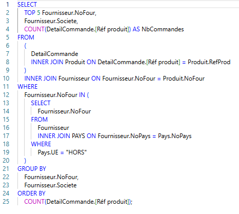
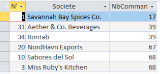
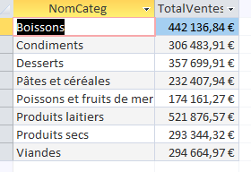
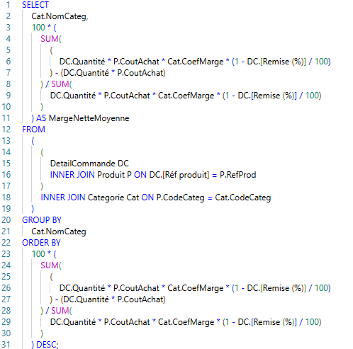
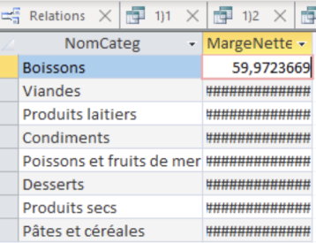

MISSION 3 :
Contexte
La nouvelle version de la base de données KDou , inclut des informations enrichies sur les pays et les coûts des produits. L'objectif est de construire des indicateurs pertinents.
Indicateur 1 : Fournisseur hors UE
Énoncé : Quel est le fournisseur hors UE qui possède le moins de commande ?
Interprétation : Les fournisseurs hors UE de par la distance sont très polluants, ainsi il est dans l’intérêt de l’image eco-friendly de Kdou de prendre des fournisseurs locaux ou nationaux. Trouver le fournisseur hors UE le moins rentable permettra a Kdou de savoir lequel remplacer.
Explication de la conception :Jointures : Nous joignons trois tables : DetailCommande (pour compter les ventes), Produit (pour lier la vente au fournisseur), et Fournisseur (pour obtenir le nom de la société). Filtrage (Sous-requête) : Pour ne garder que les fournisseurs "hors UE", nous utilisons une sous-requête. Cette sous-requête (WHERE Fournisseur.NoFour IN (...)) crée une liste de tous les fournisseurs (NoFour) qui, après jointure avec la table PAYS, ont la valeur "HORS" dans la colonne Pays.UE. Regroupement : GROUP BY sur Fournisseur.NoFour et Fournisseur.Societe permet à la fonction COUNT de compter les lignes de commande pour chaque fournisseur séparément. Résultat Final : Nous comptons (COUNT) les lignes de produits dans DetailCommande pour chaque fournisseur filtré. L'instruction ORDER BY trie ce comptage par ordre croissant (du plus petit au plus grand), et TOP 5 nous sélectionne les 5 fournisseurs hors UE avec le moins de commandes.
Code SQL

Résultat

Indicateur 2 : Total des ventes par catégorie
Énoncé : Déterminer le total des ventes pour chaque catégorie de produit.
Interprétation : Cela permet d’identifier les catégories de produits les plus rentables et les plus prisées et s’inscrit dans la démarche d’augmentation de rentabilité de KDou.
Explication de la conception :Jointures : Nous joignons DetailCommande, Produit, et Categorie (avec l'alias C). Cette jointure est nécessaire pour lier la Quantité de chaque vente (de DetailCommande) au CoutAchat du produit (de Produit) et au nom de la catégorie (C.NomCateg). Calcul du Total : La requête calcule SUM(DetailCommande.Quantité * Produit.CoutAchat). Cela représente le coût d'achat total des produits vendus (combien ces produits ont coûté à KDou). L'alias est "TotalVentes", mais il s'agit plus précisément du coût total des marchandises vendues. Regroupement : La clause GROUP BY C.NomCateg force la fonction SUM à s'exécuter séparément pour chaque catégorie (par ex. "Boissons", "Desserts"...). Résultat Final : La requête affiche le nom de chaque catégorie à côté de la somme totale
Code SQL

Résultat

Indicateur 3 : Marge nette moyenne
Énoncé : Calculer la marge nette moyenne réelle (en pourcentage) pour chaque catégorie de produits vendue sur la période, en prenant en compte l'impact des remises accordées aux clients.
Interprétation : Cette requête permet à KDou d'identifier rapidement les catégories de produits qui génèrent la meilleure rentabilité réelle après déduction des remises...
Explication de la conception : Jointures : Nous joignons DetailCommande (DC), Produit (P), et Categorie (Cat) pour avoir toutes les données de calcul (Quantité, Coût d'Achat, Coefficient de Marge, Remise) et le nom de la catégorie.
Calcul du Numérateur (Marge Nette Totale) : Le prix de vente net (après remise) est : P.CoutAchat * Cat.CoefMarge * (1 - DC.[Remise (%)] / 100). Le coût total est : P.CoutAchat. La Marge Nette Totale est SUM(CA Net - Coût Total).
Résultat Final : On divise la Marge Nette Totale par le CA Net Total et on multiplie par 100 pour obtenir le pourcentage.
Regroupement : La clause GROUP BY Cat.NomCateg assure que le calcul est effectué séparément pour chaque type de produit.
Code SQL

Résultat
